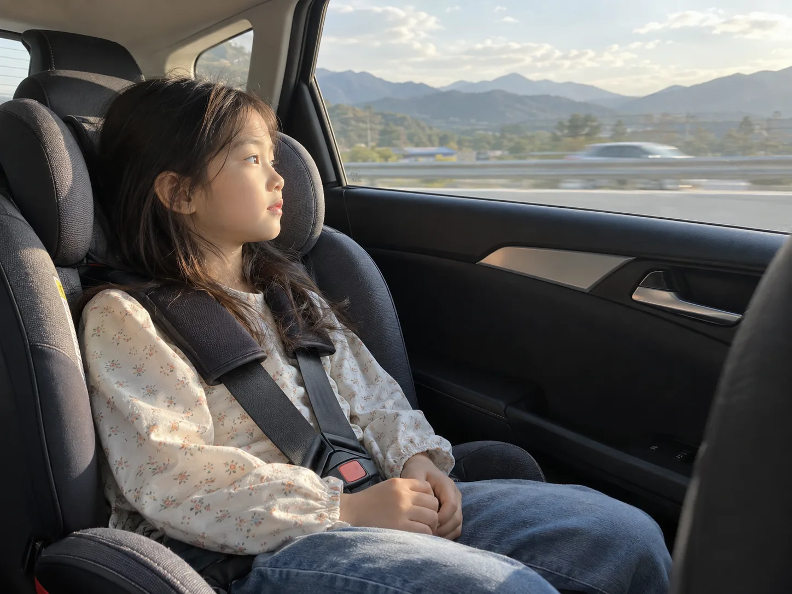
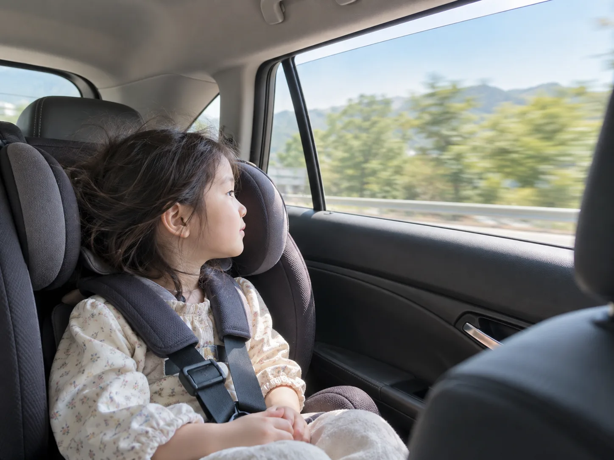

▲ 전방 시야가 확보된 좌석에서 창밖 먼 곳을 보는 것만으로도 멀미가 줄어든다(AI 생성 이미지) ⓒ CarPrism
▲ 카시트에 앉아 전방 창밖을 바라보는 아이(AI 생성 이미지) ⓒ CarPrism
추석 연휴나 여름휴가처럼 장거리 이동이 잦아지는 시기, 유독 아이들이 차만 타면 얼굴이 하얘지고 구역질을 하는 모습을 보는 부모가 많다. 흔히 "멀미약 먹이면 되지"로 넘어가지만, 아이 멀미는 원인이 한 가지가 아니다. 전정기관이 아직 자리 잡지 못해서 생기는 멀미가 있고, 배가 고파서 생기는 멀미가 있고, 스마트폰 화면을 들여다보다 생기는 멀미도 있다. 원인이 다르면 대처법도 달라야 한다. 이 기사는 아이 차멀미를 일으키는 대표적인 원인 네 가지를 하나씩 짚고, 그 옆에 바로 쓸 수 있는 대처법을 붙여 정리했다. 마지막으로는 멀미가 이미 시작된 상황에서 소아 멀미약을 어떻게 골라야 하는지도 다룬다.
원인 1 — 눈과 귀가 다른 신호를 보낼 때, 왜 하필 아이가 더 심할까
▲ 전방 시야가 트인 좌석에서 창밖 먼 곳을 바라보는 아이(AI 생성 이미지) ⓒ CarPrism
멀미는 기본적으로 '감각 불일치'에서 시작된다. 귀 안쪽 전정기관은 몸이 움직이고 있다는 신호를 뇌에 보내는데, 책을 보거나 가까운 곳을 응시하고 있으면 눈은 '정지해 있다'는 정보를 함께 보낸다. 뇌가 이 두 신호를 동시에 처리하지 못하면서 어지럼증과 구역감이 생기는 것이 멀미의 기본 원리다. 문제는 이 감각 통합 능력이 아이들에게서 유독 약하다는 점이다. 만 2세 이하 영아는 전정기관 자체가 충분히 발달하지 않아 오히려 멀미를 덜 느끼지만, 만 3~12세 사이 전정기관이 본격적으로 발달하는 시기에는 감각 신호가 늘어나면서 성인보다 멀미에 훨씬 취약해진다. 신경계 발달이 아직 완성되지 않은 이 연령대 아이들이 유독 차멀미를 자주 호소하는 이유다.
대처 — 좌석 배치와 카시트 각도로 시야 불일치 줄이기
- 가능하면 2열 중앙 좌석에 배치한다. 차량 흔들림이 가장 적고, 앞유리를 통해 전방을 볼 수 있어 시야 확보에도 유리하다.
- 카시트에 별도 각도 조절 장치가 없다면 등받이 아래에 수건이나 패드를 말아 넣어 살짝 뒤로 기울여준다. 고개가 앞으로 처지지 않아야 시야가 안정된다.
- 가까운 좌석 등받이나 발밑 대신 창밖 먼 지평선·산·건물을 보도록 유도한다. 먼 곳을 보면 시각 정보와 전정기관 신호의 어긋남이 줄어든다.
원인 2 — 배가 비어도, 너무 불러도 탈이 난다
▲ 휴게소에서 가벼운 간식을 먹는 아이(AI 생성 이미지). 공복과 과식 모두 멀미를 부추긴다 ⓒ CarPrism
공복 상태로 차를 타면 위산이 역류하기 쉬워 속 울렁거림이 먼저 시작되고, 반대로 출발 직전 과식을 하면 소화되지 않은 음식물이 흔들림에 그대로 노출돼 구역감을 키운다. 둘 다 멀미를 악화시키는 조건이라는 점에서 결국 핵심은 '적당한 타이밍'이다.
대처 — 간식은 '출발 전'과 '주행 중'으로 나눠 타이밍을 맞춘다
- 출발 1~2시간 전에 기름지지 않은 가벼운 식사를 마친다. 공복도, 포만감도 피하는 것이 목표다.
- 주행 중에는 크래커·바나나처럼 소화가 쉬운 간식을 조금씩 나눠 먹인다. 공복이 길어지지 않도록 하되 한 번에 많이 먹이지 않는다.
- 휴게소에 들를 때마다 물을 한 모금씩 마시게 하고, 튀김류나 탄산음료처럼 속을 더부룩하게 하는 음식은 장거리 구간에서는 피한다.
원인 3 — 어른은 괜찮은데 아이만 힘들어하는 냄새
차량용 방향제, 새 차 특유의 냄새, 간식 냄새처럼 어른에게는 익숙하거나 거슬리지 않는 냄새가 아이에게는 멀미를 유발하는 강한 자극이 될 수 있다. 후각은 전정기관·시각 정보와 별개로 뇌의 구토 중추를 직접 자극할 수 있는 감각이어서, 밀폐된 차 안에서는 그 영향이 더 크게 나타난다. 특히 멀미 기운이 이미 살짝 있는 상태에서 진한 냄새를 맡으면 증상이 급격히 심해지는 경우가 많다.
대처 — 향은 줄이고, 공기는 자주 바꿔준다
- 장거리 이동 시에는 방향제 사용을 자제하거나 향이 약한 제품으로 바꾼다.
- 휴게소 정차 시마다, 또는 최소 1~2시간에 한 번씩 창문을 잠깐 열어 환기한다.
- 차 안에서 냄새가 강한 음식(즉석 김밥, 튀김류 등)을 먹는 것은 피하고, 아이가 냄새에 민감하다고 하면 즉시 창문을 열어 반응한다.

▲ 창문을 살짝 열어 환기하는 모습(AI 생성 이미지). 방향제 없이 신선한 공기를 자주 들여보내는 것이 도움이 된다 ⓒ CarPrism
원인 4 — 스마트폰을 보는 그 순간, 멀미가 시작된다
스마트폰이나 책처럼 눈앞 가까운 대상에 시선을 고정하면, 정작 몸은 흔들리며 이동하고 있는데 눈은 '움직이지 않는 화면'을 보고 있다는 신호를 뇌에 전달한다. 원인 1에서 설명한 감각 불일치가 가장 극단적으로 벌어지는 상황이 바로 이 경우다. 실제로 장거리 운전 중 아이에게 스마트폰이나 태블릿을 쥐여주고 나서야 멀미가 시작됐다는 사례가 흔한 이유다.
대처 — 화면 대신 '창밖'으로 시선을 돌리는 놀이
- 장거리 구간에서는 스마트폰·태블릿·책 시청을 자제시킨다. 정 필요하면 오디오북이나 라디오처럼 화면을 보지 않는 콘텐츠로 대체한다.
- "저 산 뒤에 뭐가 있을까", "파란 차 몇 대 지나갔게"처럼 창밖을 보며 하는 놀이로 시선을 자연스럽게 전방·원거리로 유도한다.
- 멀미 조짐(하품, 식은땀, 말수 줄어듦)이 보이면 즉시 화면부터 치우고 창밖을 보게 한다.
그래도 멀미가 시작됐다면 — 소아 멀미약, 연령마다 기준이 다르다
▲ 아이에게 멀미약을 먹이기 전 설명서를 확인하는 부모(AI 생성 이미지). 소아 멀미약은 제품·연령별로 기준이 크게 다르다 ⓒ CarPrism
위의 대처법으로도 멀미가 심하게 시작됐다면 약의 도움을 받을 수 있다. 다만 소아 멀미약은 성인용보다 제품별 연령 기준이 훨씬 까다롭고 제각각이어서, 임의로 성인약을 쪼개 먹이거나 다른 아이에게 맞았던 제품을 그대로 쓰는 것은 위험하다. 식품의약품안전처의 의약품 안전사용 매뉴얼에 따르면 멀미약(정제·시럽·츄어블 등)은 승차 30분~1시간 전에 미리 복용해야 효과가 있으며, 이미 멀미가 심하게 난 뒤에 먹으면 효과가 떨어진다. 추가로 복용할 경우에도 최소 4시간 이상 간격을 두도록 안내하고 있다.
| 구분 | 핵심 기준 | 비고 |
|---|---|---|
| 만 2세 미만 | 보호자 임의 투여 금지 | 항히스타민 성분 등 소아 연령제한 약물은 의사 진료 없이 투여하지 않는다 |
| 정제·시럽·츄어블형 | 제품별 연령 기준 상이 | 같은 성분이라도 제품에 따라 복용 가능 연령이 다르므로 반드시 설명서·약사 상담 확인 |
| 스코폴라민 패치(어린이 키미테 등) | 7세 이하 사용 금지, 소아는 8~15세·체중 20kg 이상 전용 제품만 | 환각·착란·동공확대 등 부작용 보고가 있어 국내에서도 안전성 관리가 강화된 제품군. 유통이 제한적일 수 있어 약국에서 재고·구입 가능 여부를 먼저 확인해야 한다 |
※ 위 표는 식약처 의약품 안전사용 매뉴얼과 한국소비자원 소비자안전주의보를 바탕으로 한 일반 원칙이며, 실제 복용 가능 여부와 정확한 용량은 제품마다 다르다. 아이에게 멀미약을 먹이기 전에는 반드시 약사와 상담하거나 제품 설명서의 연령·체중 기준을 확인해야 한다. 관련 정보는 식약처 의약품 안전사용 매뉴얼에서 확인 가능하다.
패치형 멀미약은 특히 주의가 필요하다. 한국소비자원 안전주의보에 따르면 스코폴라민 성분 패치는 환각·착란(36.1%), 동공 확대(19.7%), 시야장애(11.5%) 등 부작용 사례가 보고된 바 있으며, 아이는 성인보다 이런 이상 증세를 스스로 인지하고 알리는 능력이 부족하다. 그래서 패치는 반드시 보호자가 직접 붙여주고, 부착 후 이상 행동이 보이면 즉시 떼어내야 한다. 소아용 패치 제품은 유통량이 많지 않아 약국에 재고가 없을 수도 있으므로, 여행 전 미리 구매하거나 대체 제형을 약사와 상의해두는 것이 안전하다. 관련 내용은 한국소비자원 소비자안전주의보에서 확인 가능하다.
정리 — 장거리 출발 전 체크리스트
체크포인트
- 가능하면 2열 중앙에 태우고, 카시트는 살짝 뒤로 기울여 전방 시야를 확보한다.
- 출발 1~2시간 전 가벼운 식사, 주행 중에는 소화 잘 되는 간식을 조금씩 나눠 먹인다.
- 방향제는 자제하고 1~2시간마다 환기한다.
- 장거리 구간에서는 스마트폰·책 대신 창밖 놀이로 시선을 유도한다.
- 멀미약은 승차 30분~1시간 전 미리 먹이고, 제품별 연령·체중 기준은 반드시 약사와 확인한다.
- 패치형 멀미약은 보호자가 직접 부착하고 이상 증세 시 즉시 제거한다.